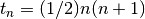
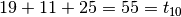

Coded triangle numbers¶
Problem 42
The nth term of the sequence of triangle numbers is given by, ; so the first ten triangle numbers are:
1, 3, 6, 10, 15, 21, 28, 36, 45, 55, ...
By converting each letter in a word to a number corresponding to its alphabetical position and adding these values we form a word value. For example, the word value for SKY is . If the word value is a triangle number then we shall call the word a triangle word.
Using words.txt (right click and ‘Save Link/Target As...’), a 16K text file containing nearly two-thousand common English words, how many are triangle words?
Solution
import urllib.request
from string import ascii_uppercase
Convert a word to a number.
def ltr2nbr( s ):
"""
>>> from euler42 import ltr2nbr
>>> ltr2nbr("SKY")
[19, 11, 25]
>>> sum(ltr2nbr("SKY"))
55
"""
return [ 1+ascii_uppercase.index(c) for c in s ]
We’ll build the set of triangle numbers incrementally. This allows us to build just enough triangle numbers to encompass the numbers we’re creating for the words we’ve seen.
def triangleWords( words ):
triangles= set( [1] )
tri= 1
order= 1
for w in words:
n= sum(ltr2nbr(w))
while n > tri:
order += 1
tri= (order*(order+1))//2
triangles.add( tri )
if n in triangles:
yield w, n
Test the module components.
def test():
import doctest
doctest.testmod(verbose=0)
Compute the answer.
def answer():
# "http://projecteuler.net/project/words.txt"
words_txt= urllib.request.urlopen( "file:words.txt" ).read().decode("ascii")
words= [ w.replace('"','') for w in words_txt.split(',') ]
twords= list( triangleWords(words) )
#print len(twords), twords
return len(twords)
Confirm the answer.
def confirm(ans):
assert 162 == ans, "{0!r} Incorrect".format(ans)
Create some output.
if __name__ == "__main__":
test()
ans= answer()
confirm(ans)
print( "The number of words which are triangle words:", ans )